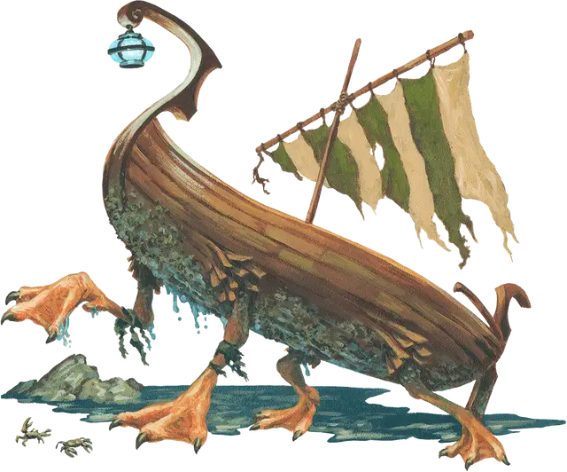

Лодка на гусиных ножках Таши
Tasha’s Creeping Keelboat
Чудесный предмет, очень редкий (требуется настройка)

Рекомендованная стоимость 5 001-50 000 зм
Это средство передвижения является лодкой шириной в 10 футов и длиной в 30 футов. У нее есть четыре гусиных лапки, которые позволяют ей передвигаться как по суше, так и по воде. Скорость ходьбы и плавания составляет 20 футов, но она не может передвигаться под водой. Лодка движется в соответствии с отданными вами командами, а существа по вашему выбору получают бонус +1 к КД, пока находятся внутри.
Лодка может беспрепятственно перевозить до 1 000 фунтов. Она способна выдержать вес вдвое больше, но при этом будет двигаться с половинной скоростью, если перевозит больше своей нормы.